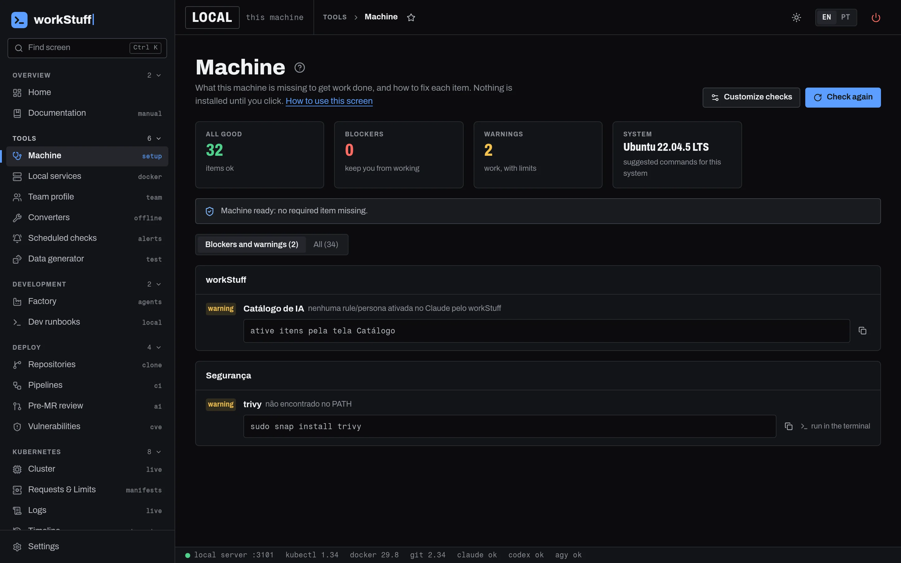

workStuff checks that your machine is ready, clones repositories, follows pipelines and pods, and runs AI coding agents in read-only mode. It drives the CLIs you already have.

25 pages in six groups. Ctrl K jumps to any of them by name or by what it does.
What is missing to get work done, with a suggested fix. Nothing is installed until you click.
Browse GitLab or GitHub groups and clone into a workspace that mirrors the hierarchy.
The latest CI run of every project you follow. A failed job gets explained by AI.
An AI agent reads your branch diff and lists problems by severity, with file and line.
An agent investigates the cluster with kubectl. Every change it suggests waits for you.
Events, restarts and rollouts of a namespace in one timeline, plus a post-mortem draft.
Also: Local services, Scheduled checks, Vulnerabilities, Compare environments, Upgrade, Performance, the agent-driven Factory and the Catalog of skills and rules for Claude Code, Codex, Gemini and OpenCode.
workStuff runs commands on your machine and against real clusters, so every default leans toward doing less.
kubectl logs api-6d8f --previousranReading is free.
kubectl get pods | grep apirefusedExactly one kubectl call: no pipes, chaining, redirection or substitution.
kubectl --context pro get podsrefusedFlags that change the target cluster are rejected.
kubectl rollout restart deploy/apiasks youA change becomes a card you approve or reject.
No token and no sudo: access is your own git credential, and nothing is written outside your home folder.
~/.local/share/workstuff.git pull; with local changes, it warns and moves on.git clone https://github.com/antrafa/workStuff.git ~/.local/share/workstuff && bash ~/.local/share/workstuff/landing/install.sh
Update: bash ~/.local/share/workstuff/landing/install.sh. Remove: add --uninstall.
git clone https://github.com/antrafa/workStuff.git "$env:LOCALAPPDATA\workStuff"; powershell -ExecutionPolicy Bypass -File "$env:LOCALAPPDATA\workStuff\landing\install.ps1"
To update, run only the second part; to remove, add -Uninstall to it. Windows support is young: the winget fixes have not been tested on real machines yet.
Updating or removing the program takes nothing with it.
~/.workstuff/ ├── settings.json AI provider, model ├── doctor-config.json expected versions ├── repo-sources.json Git connections ├── git-credentials.json tokens, mode 600 ├── cluster-environments.json DES, ITG, HML, PRO ├── doctor-audit.log every agent command ├── analysis/ AI reports └── performance/ pod samples